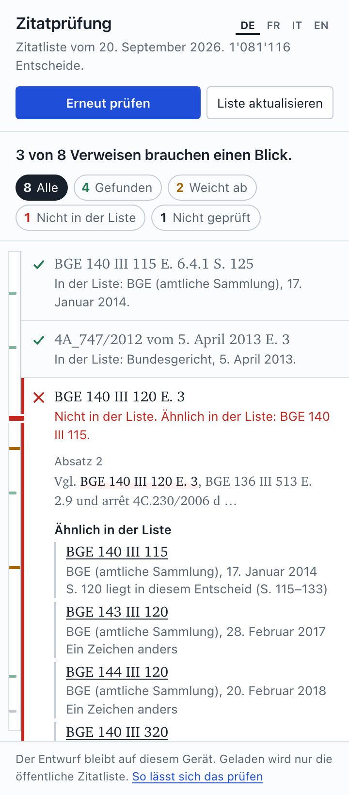

citecheck
Prüft die Verweise auf Gerichtsentscheide in einem Entwurf: Gibt es den Entscheid, gibt es die zitierte Erwägung, stimmen Seite und Datum. Direkt in Word, ohne dass der Entwurf das Gerät verlässt.
Installation in Word
Die Datei citecheck-manifest.xml ist 5 KB gross und enthält nur die Adresse des Add-ins. Sie wird einmal in Word hochgeladen.
Word für Windows (Microsoft 365 oder Office 2021 und neuer)
- Word öffnen, Menüband Einfügen (Insert), dann Add-ins oder Add-ins abrufen.
- Im Fenster «Office-Add-Ins» oben auf Meine Add-Ins, dann rechts auf Mein Add-In hochladen.
- Die heruntergeladene Datei
citecheck-manifest.xmlwählen, Hochladen. - Das Fenster «Zitatprüfung» öffnet sich rechts. Später: Menüband Überprüfen (Review), Schaltfläche Zitate prüfen.
Fehlt «Mein Add-In hochladen», hat die Organisation das Laden eigener Add-ins gesperrt. Dann kann die IT das Add-in über das Microsoft 365 Admin Center (Integrierte Apps, «Benutzerdefinierte App hochladen») für die gewünschten Personen freigeben; die Datei ist dieselbe.
Word im Browser (office.com)
- Dokument öffnen, Einfügen, Add-ins, Weitere Add-Ins.
- Meine Add-Ins, Mein Add-In hochladen, die Datei wählen.
Word für Mac
- Word beenden.
- Im Finder Gehe zu, Gehe zum Ordner …, diesen Pfad einfügen:
~/Library/Containers/com.microsoft.Word/Data/Documents/wef
Gibt es den Ordnerwefnicht, im OrdnerDocumentsanlegen. - Die heruntergeladene Datei in diesen Ordner legen.
- Word starten, Start, Add-ins, unter «Entwickler-Add-ins» citecheck wählen.
Verwendung
- Entwurf öffnen, Entwurf prüfen. Beim ersten Mal lädt das Add-in die Zitatliste (17 MB), danach nur, wenn sie sich geändert hat.
- Jeder Verweis erhält eine Zeile: gefunden, weicht ab, nicht in der Liste, nicht geprüft. Anklicken zeigt die Begründung, Im Entwurf zeigen springt zur Stelle, Entscheid öffnen führt zum Entscheid auf opencaselaw.ch.
- Das Add-in ändert nichts am Text. Auf Wunsch setzt es einen Word-Kommentar an den Verweis.

Was geprüft wird, und was nicht
Ob der Entscheid in der Liste von OpenCaseLaw steht (1'081'116 Entscheide, Bundesgerichte und kantonale Gerichte, BGE seit Band 1) und ob er die zitierte Erwägung hat. Bei BGE zusätzlich, ob die zitierte Seite im Entscheid liegt. Nicht geprüft wird, ob der Entscheid die Aussage im Entwurf trägt.
«Nicht in der Liste» heisst nicht, dass es den Entscheid nicht gibt: Unveröffentlichte und sehr neue Entscheide fehlen. Das Fenster nennt, was die Liste für das betreffende Gericht enthält. Erwägungsnummern kennt die Liste für rund vier Fünftel der Entscheide; sonst steht «nicht prüfbar».
Datenschutz
Der Entwurf, die gefundenen Verweise und die Ergebnisse bleiben im Word-Fenster auf dem Gerät. Geladen werden nur die Dateien des Add-ins und die öffentliche Zitatliste, die für alle gleich ist. Der Browser in Word erzwingt das über eine Content-Security-Policy; die technische Beschreibung und wie man es selbst nachprüft: SECURITY.md. Quellcode unter MIT-Lizenz: github.com/jonashertner/citecheck.
Rückmeldungen
Bitte den Verweis, wie er im Entwurf steht, und die Meldung des Add-ins senden. Fehlerberichte auch als Issue auf GitHub. Stand: Testversion 0.1, September 2026.
English: citecheck is a Word add-in that checks a draft's references to Swiss court decisions against the OpenCaseLaw cite list, inside Word, without the draft leaving the device. Install: download the add-in file above, then in Word: Insert, Add-ins, My Add-ins, Upload My Add-in. Details in the README.